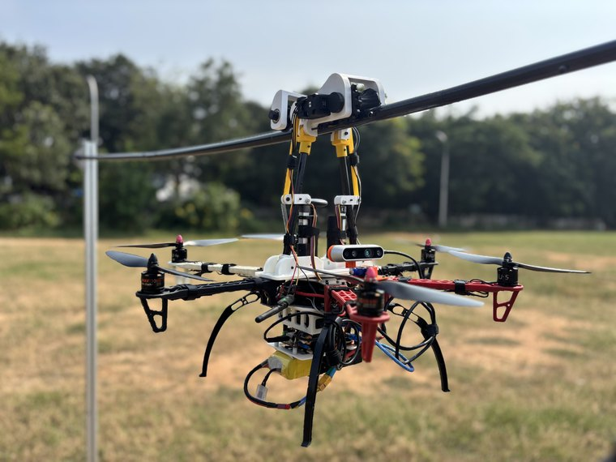

About
I'm Poorna Sasank Sesetti, a master's student in Mobile Robotics at the University of Bonn. I work on perception and state estimation: SLAM, LiDAR processing, 3D reconstruction, and open-vocabulary mobile manipulation.
Most of what I build, I build from first principles first — a filter or a reconstruction pipeline written out by hand before reaching for a library. It is the only way I have found to understand the failure modes rather than just the API. That work gets written down in the build log.
Before Bonn I was a research assistant at the Robotics Research Center, IIIT Hyderabad, and a ROS 2 developer at HILD Defence & Aerospace. I'm currently open to working-student positions and robotics engineering roles.
What I'm working on
- building
-
Open-vocabulary mobile manipulation
Language-conditioned grasping and navigation on the Toyota HSR. Scene graphs, Nav2, and a two-phase grasp pipeline. Lab project at Uni Bonn.
- master's project
-
3D building model reconstruction
Merging airborne and mobile LiDAR scans of a 10 km Bonn corridor into one clean point cloud, with a streaming PDAL pipeline that never holds it all in memory.
- writing
-
casualSfM build log
An incremental Structure-from-Motion pipeline taken apart chapter by chapter, with the maths set beside the code.
- reading
-
Probabilistic Robotics
Thrun, Burgard and Fox. Working the filters out on paper, then in code.
Day to day: C++17, Python, Rust, ROS 2, OpenCV, Eigen, PyTorch, Open3D, PDAL, MuJoCo, Gazebo, Docker, Linux.
Project graph
Here is the work as a graph. Large dots are projects, small ones are the tools and methods they are built from, so anything two projects share pulls them together. Drag a node to move it, click one to read about it.
The same four as a list, with pictures and everything else, is on the projects page.
Publications

WireFlie: A Novel Obstacle-Overcoming Mechanism for Autonomous Transmission Line Inspection Drones
A hybrid rolling-and-flying inspection robot: underactuated arms lock onto the line to roll past dampers and spacers, and it flies over the pylons it cannot roll through.
Background
- Oct 2025 –
-
MSc Mobile Robotics, University of Bonn
Visual SLAM, LiDAR perception, 3D reconstruction, multi-object tracking. Lab work on open-vocabulary mobile manipulation with the Toyota HSR.
- Dec 2025
-
Won the Ideas Competition, enaCom Transfer Center, Uni Bonn
Team Baggins. Pitched in the final at DIGITALHUB.DE and took a €1,000 prize, a few months after arriving in Germany.
- Jun 2025
-
ROS 2 Developer, HILD Defence & Aerospace
Robotics software on ROS 2: perception and control for autonomous platforms.
- – May 2025
-
Research Assistant, Robotics Research Center, IIIT Hyderabad
Drone mechanism design and experiments, leading to the RA-L paper above.
Recent writing
- Ch 04 — Evaluation & visualisation · Apr 2026
- Ch 03 — Pose recovery & triangulation · Apr 2026
- Ch 02 — The fundamental matrix · Mar 2026
- Ch 01 — Feature detection & matching · Feb 2026
Contact
Email is the fastest way to reach me, and I'm always happy to talk about robotics, perception, or a collaboration: poorna.sesetti03@gmail.com